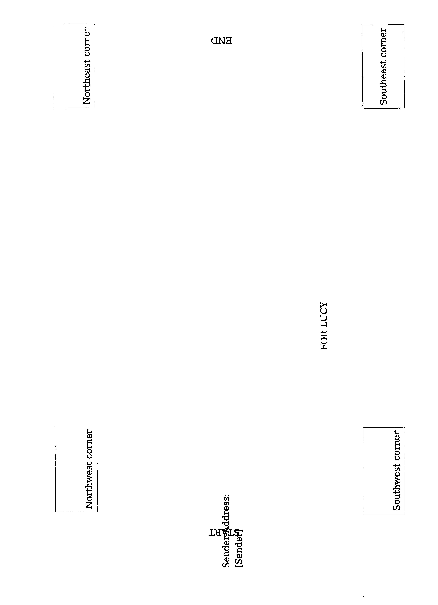
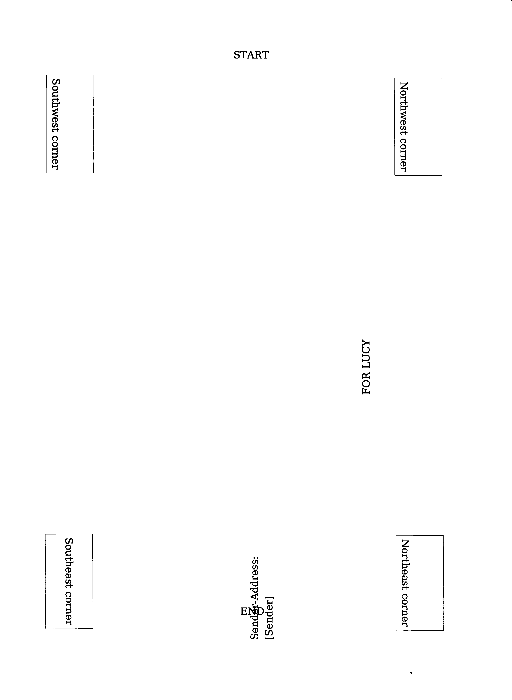
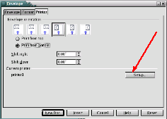
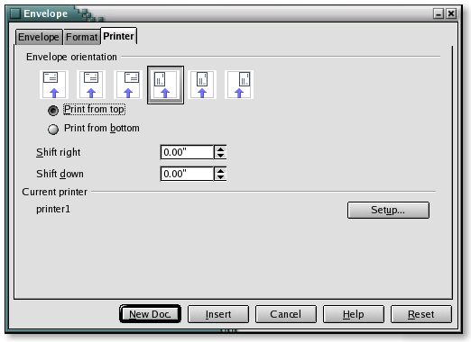
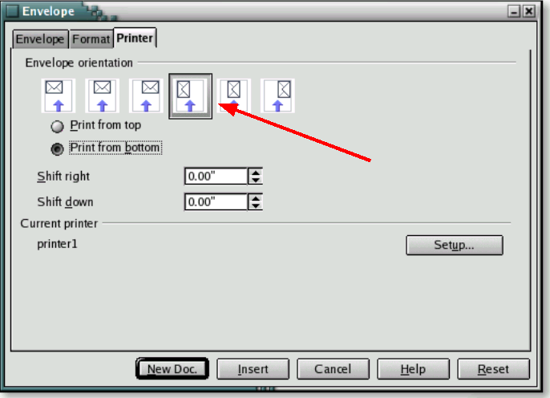

|
|
How To Setup Your System for Envelope Printing
Diagnostic Kit

[HowTo printing envelopes
diagnostics.]
[0.8]
First edition: [2006-01-13]
First
English edition: [2006-01-13]
Contents
Contents i
Overview ii
Copyright and trademark information ii
Feedback ii
Printing Envelopes Diagnostics for OpenOffice.Org - 1
Step #1: 1
Step #2: 1
Step #3: 2
Step #4: 3
Step #5: 4
Overview
Many people have difficulty printing envelopes from OpenOffice.org. This document is an attempt to make the process easier to determine envelope orientation and printer setup. For those who expect that setting up OpenOffice.org alone is sufficent will find that the process is actually two stages which can be confusing. This difference is covered by Issue Number 55499 and you are encouraged to vote for its resolution.
Copyright and trademark information
The
contents of this Documentation are subject to the Public
Documentation License, Version 1.0 (the "License"); you may
only use this Documentation if you comply with the terms of this
License. A copy of the License is available
at:
http://www.openoffice.org/licenses/PDL.rtf
The Original Documentation is HowTo printing envelopes diagnostics. The Initial Writer(s) of the Original Documentation is/are maxweber © 2006. All Rights Reserved. (Initial Writer contact(s): maxweber@openoffice.org.)
Contributor(s): grsingleton.
Portions created by grsingleton are Copyright (C)_2006. All Rights Reserved. (Contributor contact(s): grsingleton@openoffice.org).
All trademarks within this guide belong to legitimate owners.
[Note: a copy of the PDL is included in this template and is also available at: http://www.openoffice.org/licenses/PDL.rtf.]
Feedback
Please direct any comments or suggestions about
this document to:
maxweber@openoffice.org
Acknowledgments
Modifications and updates
-
Version
Date
Description of Change
[0.1]
[2006-01-13]
[mw: Initial edition issued for comment]
[0.8]
[
2006-01-16 ][grs: convert to standard format and additional graphics
Printing Envelopes Diagnostics for OpenOffice.Org -
Prerequisites:
OpenOffice.Org 2.0 or later (always use the latest stable version)
The Envelope Diagnostic Kit containing this document in PDF and the two diagnostic documents.
Product specifications of your printer hardware
1 sheet of paper media you normally use ("Letter" for countries using imperial paper sizes or "A4" for countries using metric paper sizes)
Step #1:
Question: Does your printer support the desired envelope media size by default (check with the product specifications of your printer)?
-
Yes
No
No problems with printing envelopes should arise, you can quit this sheet.
Please proceed with step #2.
Step #2:
Task: Open printing-template.odt
and ensure that the page style matches the paper size you use. For
example, if your paper tray holds A4,
please change the page-settings of to reflect the media size of
_your_ sheets using Format > Page.
Next print the document.
Step #3:
Task: Refill the printout into the paper tray so that on the next run printing will be done on that sheet-side that is already printed.
Note: Please ensure that the sheets will feed in the same direction as they are printed. In most cases this will be with the Start heading as shown below.
Step #4:
Task: Open test-envelope.odt from the Envelope Diagnostic Kit and print it.
Question: Where is the sender address located on the printout?
-
Near the header line („START“)
Near the bottom line („END“).
If your output looks like the graphic below you will have should no problems with printing envelopes. You can quit this sheet.


As shown in the following graphic.
To correct for this, change your printer setup to print "upside down" or "rotated by 180°", which is the same. (Explanation)
For accessing the printer setup use the button as indicated on this graphic.

Step #5:
-
Sender Address near Start
Sender Address near End
Task: Create and print your envelopes by using the OpenOffice.Org envelope wizard via Insert > Envelope. Feed the envelopes as indicated on the graphic in manner suitable for your printer.

If in Step 4 your test printout printed near the End label, you can correct for this by changing your printer setup to print "upside down" or you can rotate your envelope by 180°. This is effectively the same action.

Do not forget that you specify the envelope type in the printer setup by using the Setup button as indicated on this graphic. Remember to select orientation, the printer tray and the envelope type.
Explanation: By doing tasks #2 to #4 and answering the question of task #4 with „Near the bottom line („END“)“ you found out: If your printer receives a document in landscape mode it will start the printout on the „END“ of the page. Consequently if you would feed your envelope on the southwest corner (as the OpenOffice.Org envelope wizard expects it), your printer will start printing your envelope with the address-field on the northeast corner. That however wont work. The solution is to move the output 180° clockwise.
Please email maxweber@openoffice.org if this documentation was helpful in solving your printing problems or not. A short message will perfectly do: Subject: PED; Message: +1 or -1 (+1 = worked for me, -1 did not work for me).